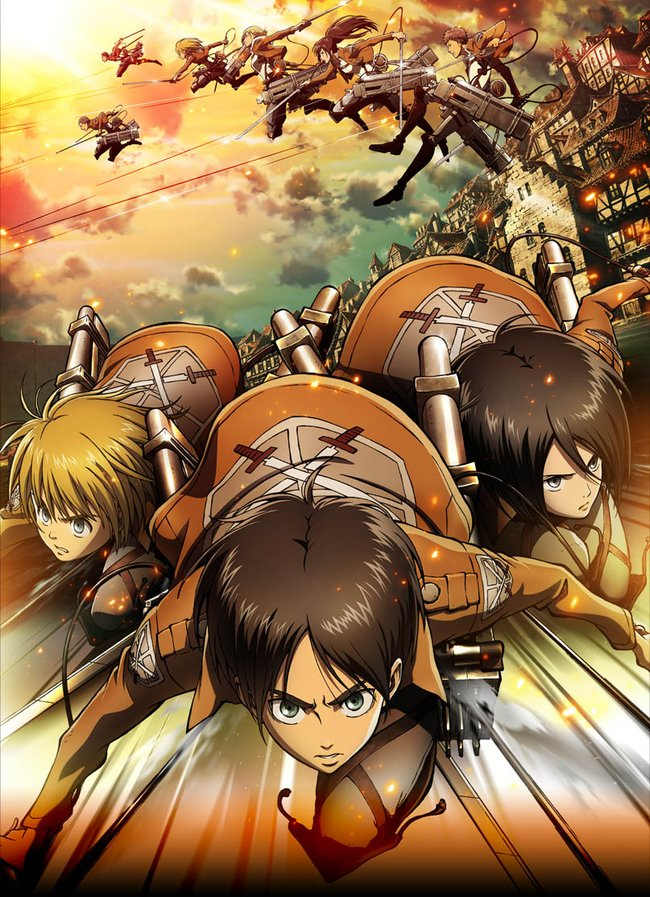

Season 1
The world behind the walls
Three childhood friends enter a war for survival. Training, the defence of Trost and the first expeditions establish the story’s central questions.
View episode list
- 01–02The fall of Shiganshina
- 03–04Cadet training
- 05–13The battle for Trost
- 14–16Choosing the Survey Corps
- 17–22The expedition
- 23–25Stohess
- Ep. 01
- Ep. 02
- Ep. 03
- Ep. 04
- Ep. 05
- Ep. 06
- Ep. 07
- Ep. 08
- Ep. 09
- Ep. 10
- Ep. 11
- Ep. 12
- Ep. 13
- Ep. 14
- Ep. 15
- Ep. 16
- Ep. 17
- Ep. 18
- Ep. 19
- Ep. 20
- Ep. 21
- Ep. 22
- Ep. 23
- Ep. 24
- Ep. 25